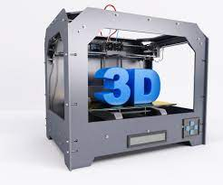

Tecnologia 3D
Una impresora 3D es una máquina capaz de imprimir figuras con volumen a partir de un diseño hecho por ordenador.
Con volumen quiere decir que tiene ancho, largo y alto.
Una impresora 3D lo que realmente hace es producir un diseño 3D creado con el ordenador en un modelo 3D físico (real).
Es decir, si hemos diseñado en nuestro ordenador, por ejemplo, una simple taza de café por medio de cualquier programa CAD (Diseño Asistido por Computador), podremos imprimirla en la realidad por medio de la impresora 3D y obtener un producto físico que sería la propia taza de café.
Una impresora 3D es algo mágico, es como si pudiéramos por fin crear objetos de “la nada”.
Objetos tan sencillos como una taza de café a objetos mucho más complicados e increíbles como partes de un avión o incluso órganos humanos utilizando las propias células de una persona.
El término impresora como su nombre indica hace referencia a ese objeto que siempre hemos tenido en casa o en la oficina de nuestro trabajo y que, conectado a nuestros ordenadores, es capaz de producir documentos almacenados en nuestros ordenadores, fundamentalmente documentos de texto y/o documentos gráficos (en color o en blanco y negro).
Con esto podemos conseguir pasar documentos electrónicos a documentos físicos.
Pero las impresoras 3d dan un salto más allá y son capaces de imprimir y crear objetos completos.
De hecho, el futuro que nos espera con las impresoras 3d es abrumador.
Las impresoras en 3 Dimensiones son la auténtica revolución tecnológica y hoy aquí explicaremos cómo funcionan, los tipos que hay y qué son capaces de hacer.
Electrónica de una Impresora
La electrónica va a ser la encargada de gestionar todos los procesos que se van a llevar a cabo en la impresora, es por tanto una parte fundamental a la hora de imprimir. En la actualidad existen multitud tarjetas electrónicas para el control, pero podemos dividiros en dos grandes grupos, las tarjetas que llevan integrada toda la electrónica en una placa o las que usan un Arduino al que se le pone un shield especifico para la impresora.
Yo personalmente, prefiero la opción de usar un Arduino + Shield, ya que siempre voy a tener la posibilidad de usar el Arduino en otros proyectos además de estar mucho más familiarizado con esta placa. Como Shield usaré una RAMP's 1.4 que es una placa muy sencilla, asequible y fácil de encontrar.
Dentro de las placas electrónicas con todos los elementos integrados, hay una gran variedad, pero solo voy a nombrar 2 de ellas, la primera es la "Sanguinololu", una de las primeras placas de propósito especifico que se crearon para las impresoras 3D y que es en la que se basan un gran número de placas. La Sanguinololu, funciona perfectamente y tiene un precio muy bajo comparado con otras similares, pero yo no recomiendo su uso por ser una placa que va un poco justita, es preferible invertir unos eurillos mas y conseguir una placa con mayores prestaciones. Una placa similar a esta pero con mejores cualidades es la "SAV MKI", esta placa ha sido totalmente desarrollada en España y contribuyo activamente a su desarrollo el grupo CloneWar's, yo he de decir que no la he probado aún, pero que por los datos que muestran y los comentarios de la gente debe ser una gran placa, así que si lo que quieres es tener todos los elementos conformando una misma placa esta opción deberías de tenerla en cuenta.

.jpg)
.jpg)
- 